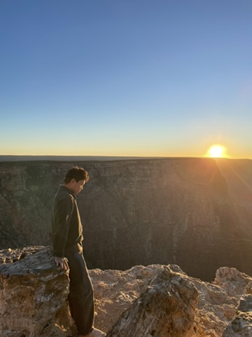
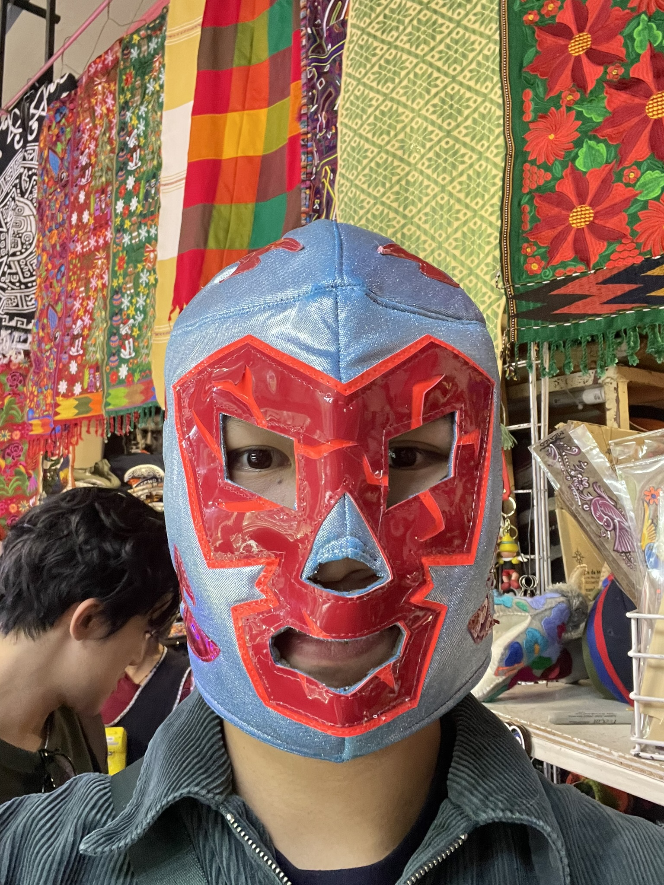
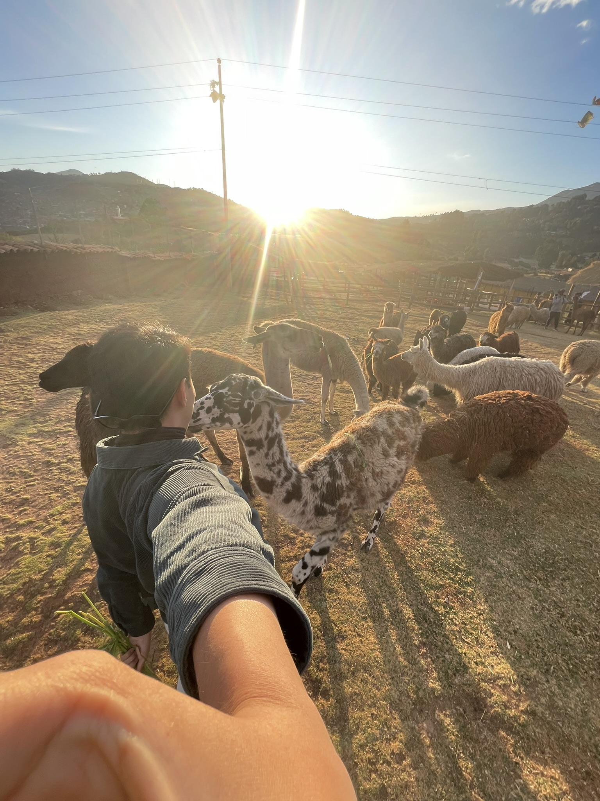

Yu Sutong
From Yu Sutong Wiki, the portfolio archive
Yu Sutong is a Singapore-based computer science student, software engineer, and builder whose work spans cloud infrastructure, automation systems, applied artificial intelligence, and hackathon products. He is currently pursuing a Bachelor of Computing (Honours) in Computer Science at the National University of Singapore, with a minor in Quantitative Finance, and has completed internships at Binance, ShopBack, and MyStorage.
His portfolio projects include Aura, an AI-powered dating product; ReUnion, a travel coordination app built for Hack&Roll 2026; OpenSafe, a zero-trust security middleware for autonomous AI agents; ShopSpot, a computer-vision shopping extension; Shwipes, a TikTok TechJam finalist project; and SnakEye, a face-controlled reimagining of the classic snake game.
Overview
Sutong describes his approach as learning by building. His interests center on cloud infrastructure, developer tooling, AI-enabled applications, and systems that automate operational work. Alongside industry internships, he has built products across consumer apps, enterprise automation, browser extensions, and computer vision.
In addition to engineering work, Sutong has served as a teaching assistant for Digital and AI Ethics, and has participated in student programs including NUS Overseas Colleges and an exchange semester at the University of North Carolina at Chapel Hill.
Travel also shows up as a defining theme in his story. During his exchange period, he spent time moving across cities, deserts, canyons, and national parks, giving the portfolio a more personal dimension than a standard list of internships and projects.
Career and internships
Worked across internal platform engineering, cloud infrastructure, and enterprise reliability initiatives in a high-trust environment, with a focus on secure systems and operational scalability.
Built automation and AI-assisted workflows that reduced manual work for business teams, with a focus on internal integrations, operations efficiency, and process simplification.
Developed backend services for customer-facing AI features, helping improve responsiveness and reliability for support workflows during peak usage periods.
Education
Dean's List in 2024. Teaching Assistant for Digital and AI Ethics. Student activities include Project Sa'Bai, NUS Geography Challenge, NUS FoodTech Challenge, and the NUS Entrepreneurship Society.
Completed a Fall 2025 exchange semester. The period also became a major chapter of travel, with visits to Cusco, Mexico City, Grand Canyon, Antelope Canyon, Bryce Canyon, and Yosemite National Park.
Completed an internship-linked entrepreneurship program in Ho Chi Minh City focused on software development and startup exposure.
Selected projects
AI-powered dating web app that uses personalized agents to vet potential matches, simulate conversational dynamics, and generate compatibility signals before users commit to chatting.
Zero-trust security middleware built during the TinyFish Hackathon to protect autonomous AI agents from indirect prompt injection and hidden payloads while browsing the web.
Travel-planning app that scans possible hub cities and compares flight options to find meetup locations that are affordable and fair for friends starting from different places.
Browser extension that turns YouTube videos into shoppable feeds by capturing frames, detecting products with multimodal AI, and matching them to product listings in real time.
TikTok TechJam finalist project that combined object detection, reverse image search, and live recommendation updates to personalize shopping cards based on swipe behavior.
Face-tracking snake game that uses computer vision and facial landmark detection to replace keyboard input with real-time head movement.
Exchange and travels
Sutong's exchange period was not only academic. It became a stretch of movement across the Americas, adding a lighter, more adventurous layer to the story told on the front page.
- Peru and Mexico, as part of a broader chapter of travel during the exchange period.
- The American Southwest, including the Grand Canyon, Antelope Canyon, and Bryce Canyon.
- Yosemite National Park, as part of the same exchange travel stretch.
That mix of building and exploring is part of what this site is trying to capture. The article is not just about work done, but also about where those years were lived.



Honors and certifications
- Dean's List, National University of Singapore (issued January 2024)
- Professional Machine Learning Engineer Certification, Google (issued June 2025; expires June 2027)
- AI4I - Literacy in AI, AI Singapore (issued February 2024)
- Top 15 finalist in Southeast Asia, TikTok TechJam 2024
- Ground Zero Pitching Competition 2022, Top 16 finalist
Technical skills
Sutong's technical stack includes React, Next.js, Node.js, Express.js, FastAPI, AWS, Active Directory, SQL systems, and developer workflow tools such as Git, Zapier, and Google Apps Script.
- Languages: Python, JavaScript, Java, C, SQL, HTML/CSS
- Frameworks and libraries: React, Next.js, Node.js, Express.js, FastAPI
- Cloud and infrastructure: AWS, Active Directory, Route 53, ALB, Lambda, VPC, EC2, RDS, S3, WAF
- Applied tools: YOLOv5, SerpApi, Workday APIs, Zapier, Google Apps Script
External links
Sources
- Information on this page was drafted from resume notes shared privately by Yu Sutong.
- Additional public-profile details were adapted from LinkedIn screenshots shared during site creation.
- Project blurbs and outbound links were added from materials provided during portfolio drafting.